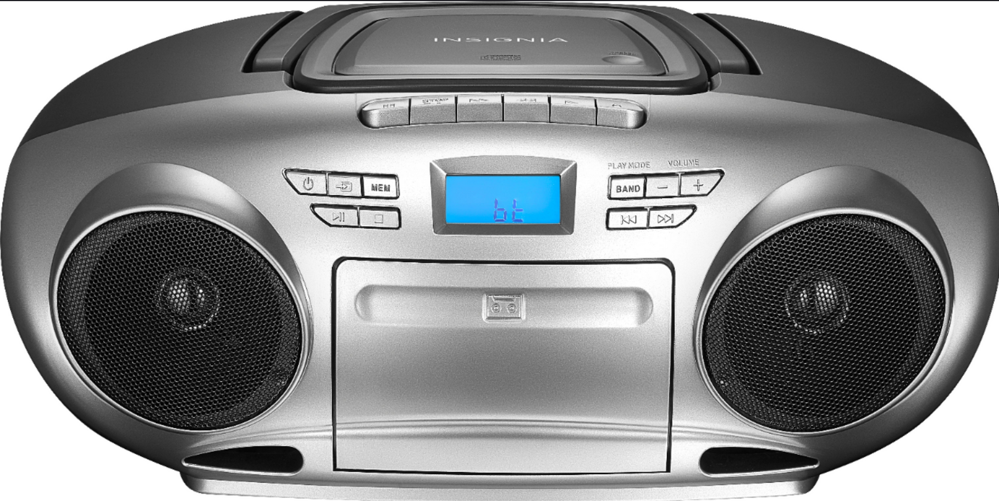
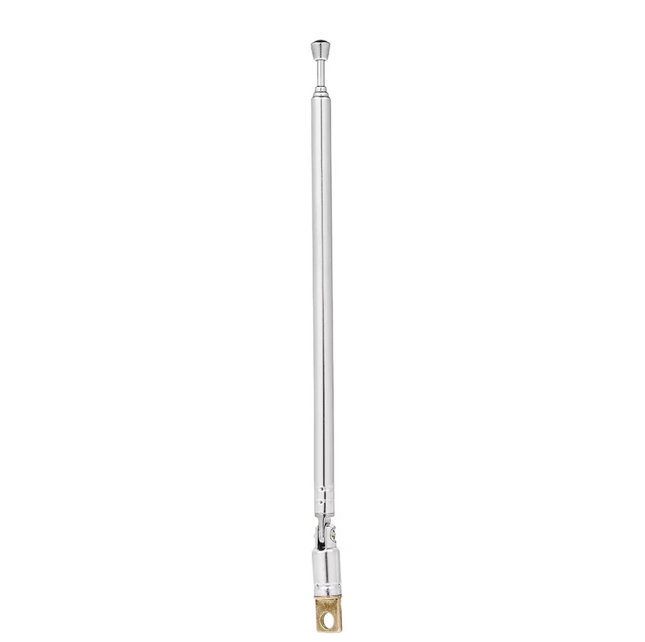
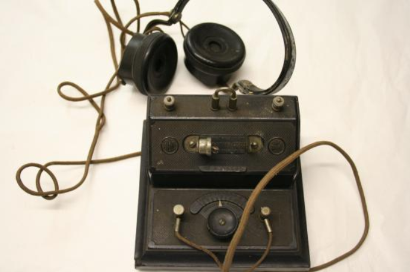
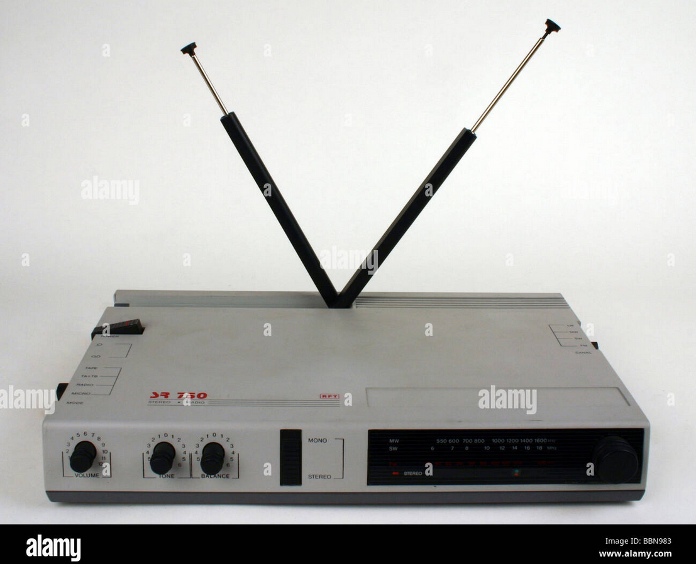
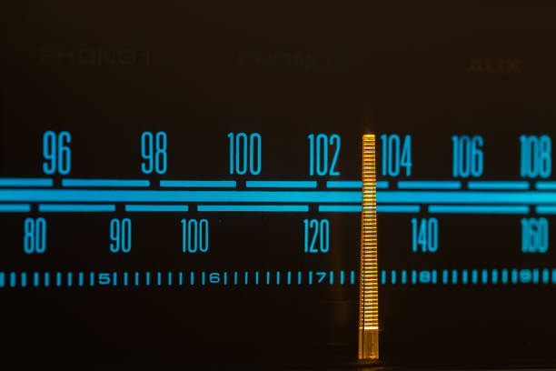
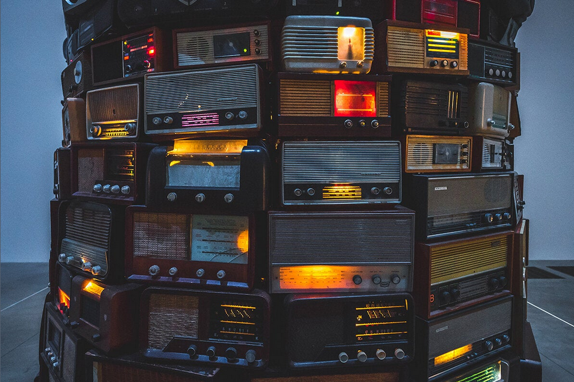
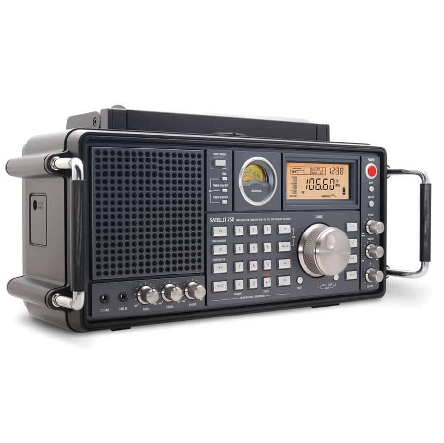
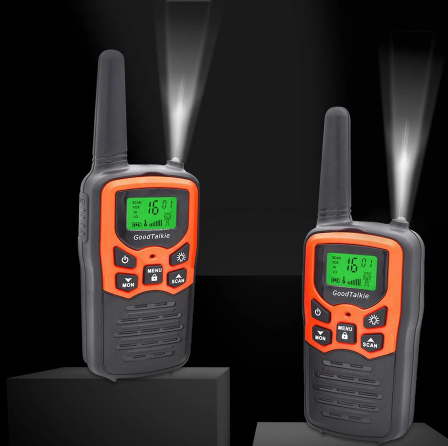

Replace all of the images with images of your choice and appropriate captions. Include two paragraphs about the contents of your site. Do not remove the skip to top link.
The world of radios is a huge one. Today, among the hustle and bustle of the internet we forget about the magic that were raios in the 20th century, bringing the whole country together in times of peace and war. The mid to late 1900s are especially knowns as the golden era of radio.







